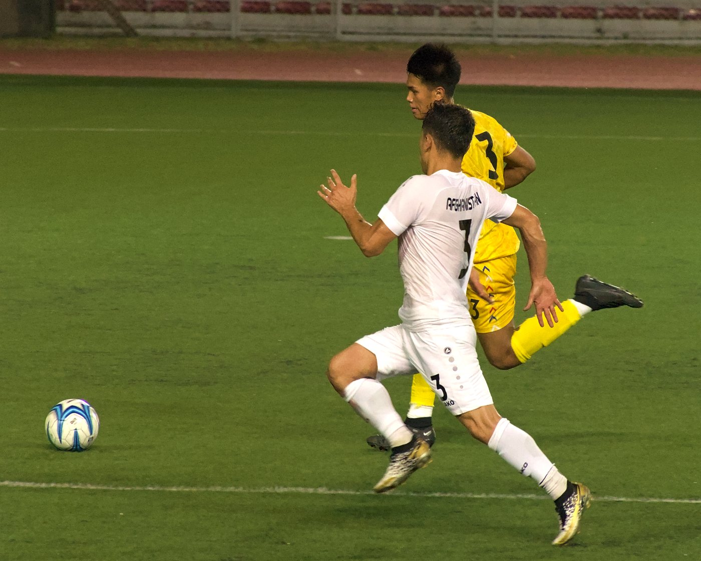
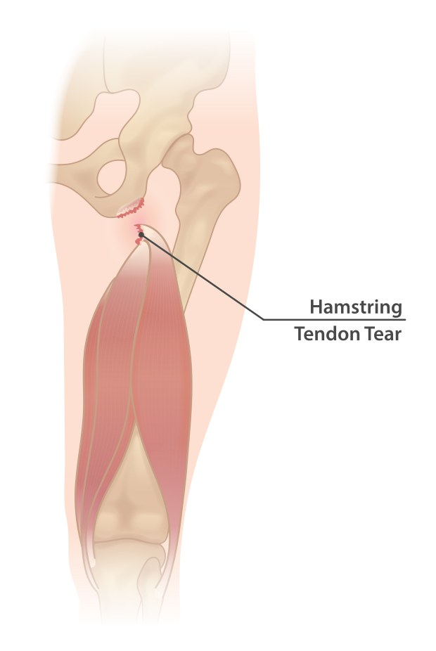

Légende du niveau de preuve : solide plusieurs méta-analyses concordantes · modéré données cohérentes mais limitées · faible études isolées, petits effectifs ou cas cliniques.
- La lésion type touche le biceps fémoral, chef long, à la jonction myotendineuse proximale, en fin de phase oscillante du sprint. Le semi-membraneux est plutôt touché lors des mécanismes « en étirement » (flexion de hanche avec genou tendu).
- La décélération impose le plus grand allongement à tous les ischio-jambiers. L'accélération impose les plus grandes forces au biceps fémoral et au semi-membraneux. Ce sont donc deux situations à travailler spécifiquement.
- Les deux facteurs de risque les plus forts ne se modifient pas : l'âge et un antécédent de lésion (risque multiplié par environ 2,7, et par environ 4,8 si la lésion est récente).
- Les facteurs modifiables sont la longueur des fascicules du biceps fémoral, la force excentrique et ses asymétries, le contrôle lombo-pelvien et l'activation fessière, la fatigue et les pics de charge en course rapide.
- Après une lésion, une inhibition neuromusculaire persiste : activation volontaire excentrique réduite d'environ 24 % et déficit qui s'étend au grand fessier et au tronc. C'est une cible clé de la rééducation.
- Rééducation : le travail en allongement (protocole L d'Askling) a les meilleures données pour raccourcir le retour au jeu. Aucune technique n'a démontré qu'elle réduisait clairement la récidive.
- Le PRP ferait gagner quelques jours, de façon incertaine, sans effet sur la récidive. La thérapie manuelle et la neurodynamique n'ont pas encore été testées par des essais spécifiques à cette lésion : elles accompagnent l'exercice.
1. Les mécanismes de la lésion
Le sprint : la fin de phase oscillante solide
Une revue systématique de 26 études (Danielsson, 2020) conclut que les lésions en course surviennent le plus probablement en fin de phase oscillante. À ce moment, les ischio-jambiers freinent l'extension du genou et la flexion de hanche en se contractant de façon excentrique, au moment de leur longueur maximale. Le biceps fémoral chef long atteint la plus grande longueur des trois muscles, et ses contraintes les plus fortes se situent à la jonction myotendineuse proximale. Elles augmentent avec la vitesse.

Le sprint vers le ballon : c'est quand la jambe revient vers l'avant que les ischio-jambiers freinent le genou et sont le plus exposés. Photo : Jethrude Hipolito, Wikimedia Commons, CC BY-SA 4.0
Le début d'appui est aussi incriminé, car des forces opposées s'exercent à la hanche et au genou au contact du sol. Le débat n'est pas tranché : une partie des données vient de modélisations, et certains auteurs pensent que le muscle travaille plutôt de façon isométrique, le tendon absorbant l'étirement (Huygaerts, 2020).
Deux types de lésion modéré
| Type « sprint » | Type « étirement » | |
|---|---|---|
| Geste | Course à vitesse maximale ou quasi maximale | Flexion de hanche extrême genou tendu (frappe, tacle glissé, grand écart) |
| Muscle | Biceps fémoral, chef long | Semi-membraneux, tendon proximal |
| Récupération | Plus courte | Plus longue, souvent sous-estimée |
Accélération, décélération et changement de direction modéré
Une étude de modélisation récente (Steventon-Lorenzen, Scand J Med Sci Sports, 2026) chez 20 adultes actifs compare ces trois gestes, très fréquents dans les sports de pivot :
- Décélération : c'est elle qui impose le plus grand allongement à tous les ischio-jambiers (10,9 à 13,7 %), devant le pas chassé (8,9 à 12,4 %) et l'accélération (5,5 à 10,2 %).
- Accélération : c'est elle qui impose les plus grandes forces au biceps fémoral chef long (1,5 fois le poids du corps) et au semi-membraneux (2,7 fois le poids du corps).
- Changement de direction (pas chassé à 45°) : c'est lui qui impose le plus grand travail excentrique au semi-membraneux.
Pendant toute une accélération sur 40 m chez des footballeurs semi-professionnels, l'élongation du biceps fémoral chef long est maximale dans les premiers appuis. Elle dépend surtout de la flexion de hanche et de l'orientation du bassin (Astrella, 2024). Cela explique la part importante de lésions en phase d'accélération.
La fatigue modéré
La fatigue modifie la coordination neuromusculaire et la cinématique du sprint, ce qui pourrait augmenter le risque (Huygaerts, 2020). Après une lésion, les joueurs perdent davantage de force horizontale sur des sprints répétés (Hanief, 2026). C'est cohérent avec la survenue fréquente des lésions en fin de match.
2. Les causes et facteurs de risque
Les facteurs non modifiables solide
Une méta-analyse de 78 études portant sur 71 324 athlètes et 8 319 lésions (Green, Br J Sports Med, 2020) trouve :
| Facteur | Augmentation du risque |
|---|---|
| Antécédent de lésion des ischio-jambiers (quel qu'il soit) | × 2,7 |
| Lésion récente des ischio-jambiers | × 4,8 |
| Antécédent de rupture du ligament croisé antérieur | × 1,7 |
| Antécédent de lésion du mollet | × 1,5 |
| Âge plus élevé | Associé de façon significative |
Le risque de récidive s'évalue mieux avec les données cliniques qu'avec l'IRM de la première lésion.
Les causes musculaires et l'architecture modéré
- Longueur des fascicules du biceps fémoral chef long : des fascicules de moins de 10,56 cm multiplient le risque par 4,1 chez des footballeurs d'élite (Timmins, cité dans Hagos, 2025). Le seuil est de 10,42 cm dans le football australien, avec un risque multiplié par 1,9 (Opar, 2021). Avoir des fascicules plus longs atténue le sur-risque lié à l'âge ou à un antécédent.
- Force excentrique : la force absolue n'était pas associée au risque dans le football australien. En revanche, une asymétrie gauche-droite de plus de 9 % l'était, avec un risque multiplié par 1,8 (Opar, 2021).
- Anatomie : l'aponévrose étroite du biceps fémoral chef long concentrerait les contraintes (Zhu, 2026).
- Raideur des ischio-jambiers et rapport de force ischio-jambiers/quadriceps sont cités comme facteurs, avec des données moins homogènes (Chapman, 2025 ; Hagos, 2025).
Les causes neurologiques et neuromusculaires modéré
C'est probablement le volet le plus sous-estimé en pratique.
- Inhibition persistante : des membres précédemment lésés montrent une activation volontaire réduite d'environ 24 % en contraction excentrique maximale, mais pas en concentrique. Les réflexes d'étirement et tendineux du biceps fémoral sont aussi diminués (Buhmann, Med Sci Sports Exerc, 2020).
- Un déficit qui dépasse le muscle lésé : chez 21 footballeurs ayant eu une lésion, l'activation du biceps fémoral diminue de 21 à 29 %, celle du grand fessier de 20 à 24 %, et celle du grand dorsal et des érecteurs lombaires de 12 à 17 %. C'est vrai sur le Nordic, le kettlebell swing et le leg curl glissé, même après le retour au jeu (Gülgösteren, 2025).
- Des antagonistes trop actifs : chez des footballeurs d'élite, le côté lésé montre moins d'activité du biceps fémoral, un taux de développement de la force plus faible et une co-activation du quadriceps plus élevée (Ritzmann, 2022).
- Au niveau cortical : une moindre inhibition corticale du biceps fémoral a été rapportée chez des sprinteurs (Higashihara, résumé de congrès, 2024 : donnée très préliminaire).
- Nerf sciatique : une mécanosensibilité ou un piégeage du sciatique au niveau ischiatique peut imiter des « récidives » de lésion. Cela a été décrit chez un footballeur professionnel guéri à l'IRM mais symptomatique, amélioré par un travail de mobilité neurale (Sawaf, 2026). faible Ce ne sont que des cas cliniques.
Les causes articulaires, lombo-pelviennes et posturales modéré à faible
- Une revue sur les footballeurs (Hanief, 2026, revue Q3, 6 études) rapporte qu'une antéversion du bassin et une inclinaison latérale du tronc plus marquées au sprint sont associées à davantage de lésions. À l'inverse, une activation plus forte du grand fessier et du tronc est associée à moins de lésions.
- L'antéversion du bassin, la flexion du tronc et la flexion de hanche augmentent l'allongement du biceps fémoral (Zhu, 2026 ; Astrella, 2024). Le bassin est donc un levier mécanique direct.
- L'activation du moyen fessier est citée comme facteur modifiable dans le football australien (Chapman, 2025).
- La position lombaire modifie la sensibilité neurale : un slump test réalisé en extension lombaire provoque plus de symptômes distaux et réduit l'extension du genou (Swanson, 2025, chez des sujets sains).
La charge et l'entraînement modéré
- Les augmentations brutales du volume de course rapide sont un facteur de risque majeur (Chapman, 2025).
- Un arrêt brutal de l'entraînement, comme une reprise après coupure ou une intersaison, et la fatigue augmentent le risque et la récidive (Zhu, 2026).
- Exposer régulièrement l'athlète à la vitesse maximale à l'entraînement est protecteur, car le sprint allonge aussi les fascicules (Rudisill, 2022).
Une limite importante : on prédit mal la blessure individuelle
Même en combinant antécédent, architecture et asymétrie de force, la capacité à prédire quel joueur se blessera reste modeste : aire sous la courbe de 0,68 à 0,73. Mesurer ces paramètres plusieurs fois dans la saison ne l'améliore pas (Opar, 2021). Ces tests servent à orienter le travail, pas à prédire une lésion.
3. Le diagnostic et le pronostic : l'IRM et la classification BAMIC
La classification britannique (BAMIC) note le grade de la lésion, de 0 à 4, et sa localisation : a = myofasciale, b = jonction myotendineuse, c = intratendineuse.

Les ischio-jambiers, de l'ischion (bassin) au genou. Une lésion qui atteint le tendon (ici, le tendon proximal) demande un retour plus prudent. Illustration : InjuryMap, Wikimedia Commons, CC BY-SA 4.0
- Lésions intratendineuses (« c ») : le retour à l'entraînement est plus long. Il prend 34 jours pour un grade 2c et 48 jours pour un 3c chez des athlètes d'athlétisme d'élite, contre 18,6 jours en moyenne pour l'ensemble des lésions (Pollock, Br J Sports Med, 2021). Dans un club de Premier League, il prenait 36 jours contre 24, avec 38,5 % de récidives contre 12,5 % (Shamji, 2021).
- Avec une rééducation adaptée à la localisation (approche British Athletics), le taux de récidive est tombé à 2,9 %, et aucune lésion intratendineuse n'a récidivé (Pollock, 2021).
- Une méta-analyse confirme un meilleur pronostic pour les lésions de jonction (« b ») que pour les lésions intratendineuses (« c »). Les éléments IRM les plus péjoratifs sont l'aspect « ondulé » du tendon et la perte de tension tendineuse, plus que la longueur de l'atteinte (Beattie, 2023).
4. La prévention : ce qui marche, et avec quelle certitude
| Stratégie | Résultat | Niveau |
|---|---|---|
| Renforcement excentrique (dont le Nordic) | De 57 à 70 % de lésions en moins. Allonge les fascicules (+0,9 cm) et réduit les asymétries (Rudisill, Am J Sports Med, 2022, 108 essais randomisés) | modéré |
| Nordic seul, réanalysé avec une méthodologie stricte | Risque relatif de 0,59, mais un intervalle de confiance de 0,27 à 1,29 : l'effet n'est pas démontré de façon robuste, car les essais présentent un risque de biais élevé (Impellizzeri, 2021) | incertain |
| FIFA 11+ (football) | Le plus constant en méta-analyse en réseau : 45 % de lésions en moins (rapport des taux d'incidence 0,55), mais une certitude faible à très faible (Hong, Sports Med Open, 2026) | modéré |
| Dose de Nordic | Une phase à volume élevé, puis un entretien d'environ 48 répétitions par semaine, idéalement à l'échauffement (Nunes, revue parapluie, 2024) | modéré |
| Étirements | Gagnent en souplesse, mais l'effet préventif seul n'est pas démontré (Rudisill, 2022) | faible |
5. Les traitements en cours et leurs résultats
La rééducation par l'exercice : le socle
- Protocole L d'Askling (exercices en allongement) : c'est le mieux étayé pour raccourcir le retour au jeu. Une méta-analyse de 2026 (Zhu, Scientific Reports, 14 essais randomisés, 693 athlètes) le juge avec une certitude modérée, sans hausse de la récidive. Les deux essais d'Askling rapportent 23 et 37 jours de moins que le protocole classique (Aali, 2026). modéré Ces résultats viennent d'un seul groupe de recherche.
- Allongement précoce ou différé : dans un essai randomisé de 90 athlètes (Vermeulen, Br J Sports Med, 2022), introduire l'allongement dès le premier jour plutôt qu'après une course à 70 % de la vitesse maximale ne change ni le délai de retour (23 jours contre 33, différence non significative) ni la récidive. On peut donc commencer tôt sans danger, mais ce n'est pas une accélération garantie.
- PATS (agilité progressive et stabilisation du tronc) : une méta-analyse de 2022 trouve une réduction de la récidive à 12 mois (Jankaew, 2022). Celle de 2026 la juge non concluante, avec une certitude très faible (Zhu, 2026). faible
- Rééducation « jusqu'au seuil de douleur » : plus de force, sans retarder le retour (1 essai, certitude modérée).
- Le constat d'ensemble : la revue « vivante » de Sports Medicine (Afonso, 2023) conclut qu'aucune intervention n'est clairement supérieure, que ce soit pour le délai de retour ou la récidive. Les programmes d'exercice sont aussi souvent mal décrits et mal dosés.
Le protocole d'Askling en pratique : les 3 exercices
Dans les deux essais d'Askling, la course progressive était la même pour tous : seuls les exercices de renforcement changeaient (Askling, 2013 ; Askling, 2014).
retour au jeu avec le protocole L chez des footballeurs d'élite
retour au jeu avec la rééducation classique
contre 86 jours chez des sprinteurs et sauteurs d'élite
Dans les deux études, la course progressive était la même pour tout le monde : seuls les exercices de renforcement changeaient (Askling, 2013 ; Askling, 2014). Le protocole repose sur trois exercices, du plus doux au plus exigeant.
Exercice 1 · L'Extender, pour démarrer en douceur
- Allongé sur le dos, la hanche pliée à environ 90°, tenez votre cuisse avec les deux mains.
- Tendez lentement le genou jusqu'à sentir l'étirement, juste avant la douleur, puis revenez.
- Repère : 2 fois par jour, 3 séries de 12.
Exercice 2 · Le Diver, « l'arabesque »
- Debout sur la jambe blessée, genou légèrement plié.
- Penchez le buste en avant en tendant les bras devant vous, pendant que l'autre jambe part en arrière, comme un plongeon. Revenez debout.
- C'est la hanche qui travaille : le dos reste droit.
- Repère : 1 fois par jour, 3 séries de 6.
Exercice 3 · Le Glider, le plus exigeant
- Debout, les mains sur un appui (barre, dossier de chaise), la jambe blessée devant, genou légèrement plié, le poids sur le talon avant.
- Faites glisser l'autre jambe vers l'arrière, sur une serviette ou un sol glissant : l'arrière de la cuisse avant s'étire sous charge.
- Revenez en tirant avec les bras, pour ne pas forcer sur la jambe blessée.
- Repère : 1 jour sur 2, 3 séries de 4, en allant progressivement plus loin puis plus vite.
Aucun exercice ne doit faire mal : une légère gêne est acceptable, une douleur non. On passe à l'exercice suivant quand le précédent est bien toléré. Ces repères sont ceux des études : votre ostéopathe, kiné ou préparateur physique les adaptera à votre lésion. Le retour au sport se valide notamment par un test d'élévation rapide de la jambe tendue, sans appréhension.
Le PRP (plasma riche en plaquettes)
- Méta-analyse du British Journal of Sports Medicine de 2026 (Nakagawa, 6 essais randomisés, 277 patients) : 8,6 jours de moins en moyenne (21,4 contre 30 jours), mais avec une hétérogénéité très forte (I² = 94 %). Pas d'effet sur la récidive (15 % contre 16 %).
- Méta-analyse de Sports Medicine Open de 2026 (Bensa, 9 essais randomisés) : environ 7,5 jours de moins, un léger gain sur la douleur pour les ischio-jambiers, et pas d'effet sur la récidive.
- Les synthèses plus anciennes (Seow, 2020 ; Afonso, 2023) ne trouvaient pas de bénéfice significatif.
- faible à modéré Le gain éventuel est de quelques jours, sans aucune protection contre la récidive.
Les autres techniques
- Ondes de choc radiales : un bénéfice modeste, sur un seul essai. faible
- Laser de basse intensité : aucun bénéfice ajouté. faible
- Cryothérapie : moins efficace qu'une rééducation active sans douleur (Abdulridha, 2025).
- Neurodynamique (glissements et mises en tension du sciatique) : elle améliore la souplesse des ischio-jambiers immédiatement et à court terme, mieux que l'étirement statique à court terme (Núñez de Arenas-Arroyo, 2025, 13 essais randomisés, sujets sans lésion). Sur la lésion elle-même, on ne dispose que de cas cliniques, dont celui d'un footballeur professionnel « récidivant » en réalité atteint d'une atteinte neurale. faible
- Thérapie manuelle et ostéopathie : elles n'ont pas encore été évaluées par des essais randomisés spécifiques à cette lésion (délai de retour, récidive). Elles s'intègrent en complément de l'exercice : soulager, redonner de la mobilité au bassin, au rachis lombaire et au nerf sciatique, et permettre au joueur de mieux tolérer le travail.
Les critères de retour au jeu
Une revue de Sports Medicine de 2026 (Pecci, 135 études, footballeurs) retient pour les ischio-jambiers :
- les plus utilisés : une symétrie de force des fléchisseurs et extenseurs du genou, et l'absence de douleur sur les gestes spécifiques du sport ;
- les mieux étayés : les tests d'amplitude (extension active du genou, élévation de la jambe tendue active et passive, H-test d'Askling) et le sentiment subjectif d'être prêt.
6. Ce que j'en retiens comme ostéopathe de terrain
- Le bilan : antécédents (ischio-jambiers, LCA, mollet), âge, asymétrie de force excentrique (plus de 9 %), contrôle du bassin au sprint, activation fessière, slump test (y compris en extension lombaire), et palpation de l'interface entre l'ischion et le sciatique.
- Penser « chaîne postérieure » et pas seulement « ischio » : après une lésion, le grand fessier et le tronc sont eux aussi sous-activés. Les exercices dominants de hanche (soulevé de terre jambes tendues, kettlebell swing) ont donc leur place, à côté des exercices dominants de genou (Nordic, leg curl glissé).
- Travailler en allongement tôt et progressivement (protocole L), puis réintroduire la vitesse, puis la décélération et les changements de direction, qui sont les gestes les plus contraignants.
- Adapter la rééducation à l'IRM : une lésion intratendineuse (« c ») demande une progression plus prudente et un délai plus long.
- Le rôle du soin manuel : soulager, redonner de la mobilité (bassin, rachis, nerf sciatique) et accompagner l'exercice, qui reste le moteur de la reconstruction du muscle. Les deux se complètent.
- Face à une « récidive » à l'IRM normale, penser à une composante neurale (sciatique), surtout quand la douleur est profonde et fessière et qu'elle est reproduite par la neurodynamique.
- En prévention : Nordic ou FIFA 11+ avec une bonne observance, une exposition régulière au sprint maximal, et une surveillance des pics de course rapide, surtout à la reprise.
7. Les limites de ce dossier
- Beaucoup d'études portent sur des hommes, footballeurs ou joueurs de football australien. Les données sur le rugby et sur les femmes sont rares.
- Les mécanismes reposent en partie sur des modélisations. Les études sur les facteurs neuromusculaires sont transversales et montrent des associations, pas des causes.
- Les essais sur la rééducation sont peu nombreux, souvent à risque de biais, et décrivent mal les programmes d'exercice.
Une cuisse qui tire, une blessure qui revient ?
Au cabinet à Narbonne, je fais le bilan complet de la chaîne arrière et je vous accompagne jusqu'au retour sur le terrain.
Références
- Danielsson A et al. The mechanism of hamstring injuries – a systematic review. BMC Musculoskelet Disord 2020. doi:10.1186/s12891-020-03658-8
- Huygaerts S et al. Mechanisms of hamstring strain injury: interactions between fatigue, muscle activation and function. Sports 2020. doi:10.3390/sports8050065
- Steventon-Lorenzen N et al. Hamstring mechanics during acceleration, deceleration and sidestep cutting. Scand J Med Sci Sports 2026. doi:10.1111/sms.70257
- Astrella A et al. Biceps femoris muscle-tendon strain during an entire overground sprint acceleration. Sports Biomech 2024. doi:10.1080/14763141.2024.2353233
- Hanief YN, Haryono S. Sprint biomechanics associated with hamstring strain injury in football: a systematic review. Reabilitacijos mokslai 2026. doi:10.33607/rmske.v1i34.2279
- Zhu J et al. Mechanisms of hamstring strain injuries in sprinting: an integrative scoping review. Front Physiol 2026. doi:10.3389/fphys.2026.1943228
- Green B et al. Recalibrating the risk of hamstring strain injury: a 2020 systematic review and meta-analysis. Br J Sports Med 2020. doi:10.1136/bjsports-2019-100983
- Opar DA et al. Screening hamstring injury risk factors multiple times in a season does not improve the identification of future injury risk. Med Sci Sports Exerc 2022. doi:10.1249/mss.0000000000002782
- Hagos A et al. Risk factors and injury prevention strategies for hamstring injuries: a narrative review. EFORT Open Rev 2025. doi:10.1530/eor-2024-0135
- Chapman DW et al. A scoping review for hamstring injury risk monitoring in Australian rules football. Encyclopedia 2025. doi:10.3390/encyclopedia5020072
- Buhmann R et al. Voluntary activation and reflex responses after hamstring strain injury. Med Sci Sports Exerc 2020. doi:10.1249/mss.0000000000002327
- Gülgösteren E et al. Persistent neuromuscular deficits in the posterior kinetic chain following hamstring strain injury. BMC Sports Sci Med Rehabil 2025. doi:10.1186/s13102-025-01435-5
- Ritzmann R et al. Neuromuscular characteristics of agonists and antagonists during maximal eccentric knee flexion in soccer players with a history of hamstring injuries. PLoS One 2022. doi:10.1371/journal.pone.0277949
- Higashihara A et al. Effects of previous hamstring strain injury on corticospinal excitability and cortical inhibition (résumé de congrès). Br J Sports Med 2024. doi:10.1136/bjsports-2024-ioc.212
- Sawaf A. Proximal hamstring-related sciatic nerve entrapment presenting as recurrent hamstring strain in a professional footballer. J Orthop Case Rep 2026. doi:10.13107/jocr.2026.v16.i09.8028
- Swanson BT et al. The influence of spine position on measures of lower extremity neural sensitivity. J Back Musculoskelet Rehabil 2025. doi:10.1177/10538127251370575
- Pollock N et al. A 4-year study of hamstring injury outcomes in elite track and field using the British Athletics rehabilitation approach. Br J Sports Med 2022. doi:10.1136/bjsports-2020-103791
- Shamji R et al. Association of the BAMIC and anatomic location with return to full training and reinjury following hamstring injury in elite football. BMJ Open Sport Exerc Med 2021. doi:10.1136/bmjsem-2020-001010
- Beattie CE et al. Are return-to-play times longer in lower-limb muscle injuries involving the intramuscular tendon? J Sci Med Sport 2023. doi:10.1016/j.jsams.2023.10.002
- Rudisill SS et al. Evidence-based hamstring injury prevention and risk factor management: a meta-analysis of RCTs. Am J Sports Med 2022. doi:10.1177/03635465221083998
- Impellizzeri FM et al. Why methods matter in a meta-analysis: a reappraisal showed inconclusive injury preventive effect of Nordic hamstring exercise. J Clin Epidemiol 2021. doi:10.1016/j.jclinepi.2021.09.007
- Hong B et al. Comparative effectiveness of exercise interventions for hamstring injury prevention in football players: network meta-analysis. Sports Med Open 2026. doi:10.1186/s40798-026-01087-w
- Nunes H et al. The effects of Nordic hamstring exercise on performance and injury: an umbrella review. Healthcare 2024. doi:10.3390/healthcare12151462
- Askling CM et al. Acute hamstring injuries in Swedish elite football: a prospective randomised controlled clinical trial comparing two rehabilitation protocols. Br J Sports Med 2013. doi:10.1136/bjsports-2013-092165
- Askling CM et al. Acute hamstring injuries in Swedish elite sprinters and jumpers: a prospective randomised controlled clinical trial comparing two rehabilitation protocols. Br J Sports Med 2014. doi:10.1136/bjsports-2013-093214
- Zhu J et al. Effects of rehabilitation interventions on time to return to play and reinjury rate in athletes with acute hamstring strain injuries. Sci Rep 2026. doi:10.1038/s41598-026-70693-1
- Aali S et al. Prevention and rehabilitation of hamstring injuries through the Nordic and Askling protocols: a systematic review. Human Movement 2026. doi:10.5114/hm/217862
- Vermeulen R et al. Early versus delayed lengthening exercises for acute hamstring injury in male athletes: an RCT. Br J Sports Med 2022. doi:10.1136/bjsports-2020-103405
- Jankaew A et al. Therapeutic exercises and modalities in athletes with acute hamstring injuries: a meta-analysis. Sports Health 2022. doi:10.1177/19417381221118085
- Afonso JR et al. Effectiveness of conservative interventions after acute hamstrings injuries in athletes: a living systematic review. Sports Med 2023. doi:10.1007/s40279-022-01783-z
- Abdulridha KH et al. Comparative effectiveness of rehabilitation protocols for hamstring injuries: a meta-analysis. J Bodyw Mov Ther 2025. doi:10.1016/j.jbmt.2025.06.030
- Nakagawa HF et al. Effects of percutaneous PRP injection on return-to-play after acute hamstring muscle injury: a meta-analysis. Br J Sports Med 2026. doi:10.1136/bjsports-2025-110683
- Bensa A et al. Platelet-rich plasma accelerates the return to sport in athletes with acute muscle injuries: a fragility index-based meta-analysis. Sports Med Open 2026. doi:10.1186/s40798-026-01017-w
- Seow D et al. Platelet-rich plasma injection for the treatment of hamstring injuries: meta-analysis with best-worst case analysis. Am J Sports Med 2020. doi:10.1177/0363546520916729
- Núñez de Arenas-Arroyo S et al. Immediate and short-term effects of neurodynamic techniques on hamstring flexibility: a meta-analysis. PLoS One 2025. doi:10.1371/journal.pone.0318671
- Pecci J et al. Return-to-play criteria following lower limb muscle injuries in soccer: a systematic review. Sports Med 2026 (DOI non fourni par la base ; consultable via Consensus).